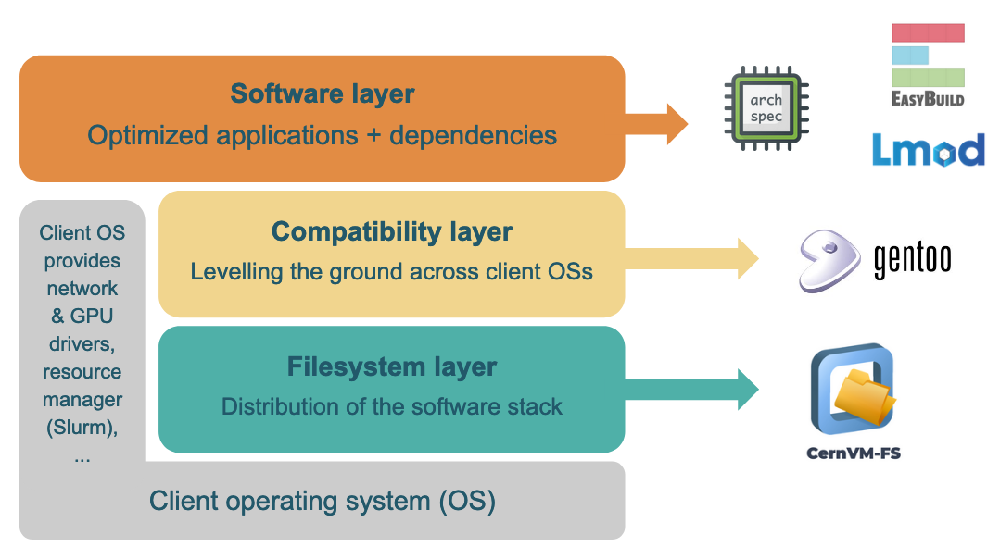

Work in progress
(30 April 2025)
The contents of this tutorial are currently being reworked to be up-to-date with recent developments in CernVM-FS, and to be well integrated in the EESSI documentation.
It is based on the "Best Practices for CernVM-FS in HPC" tutorial that was held on 4 Dec 2023, see also https://multixscale.github.io/cvmfs-tutorial-hpc-best-practices.
High-level design of EESSI¶
The design of EESSI is very similar to that of the Compute Canada software stack it is inspired by, and is aligned with the motivation and goals of the project.
In the remainder of this section of the tutorial, we will explore the layered structure of the EESSI software stack, and how to use it.
In the next section will cover in detail how you can get access to EESSI (and other publicly available CernVM-FS repositories).
Layered structure¶
To provide optimized installations of scientific software stacks for a diverse set of system architectures, the EESSI project consists of 3 layers, which are constructed by leveraging various open source software projects:
- the filesystem layer to distribute the software stack;
- the compatibility layer to level the ground across different client operating systems;
- the software layer to run optimized applications and provided their dependencies

Filesystem layer¶
The filesystem layer uses CernVM-FS to distribute the EESSI software stack to client systems.
As presented in the previous section, CernVM-FS is a mature open source software project that was created exactly for this purpose: to distribute software installations worldwide reliably and efficiently in a scalable way. As such, it aligns very well with the goals of EESSI.
The CernVM-FS repository for EESSI is /cvmfs/software.eessi.io,
which is part of the default CernVM-FS configuration since 21 November 2023.
To gain access to it, no other action is required then installing (and configuring) the client component of CernVM-FS.
Note on the EESSI pilot repository (click to expand)
There is also a "pilot" CernVM-FS repository for EESSI (/cvmfs/pilot.eessi-hpc.org),
which was primarily used to gain experience with CernVM-FS in the early years of the EESSI project.
Although it is still available currently, we do not recommend using it.
Not only will you need to install the CernVM-FS configuration for EESSI to gain access to it, there also are no guarantees that the EESSI pilot repository will remain stable or even available, nor that the software installations it provides are actually functional, since it may be used for experimentation purposes by the EESSI maintainers.
Compatibility layer¶
The compatibility layer of EESSI levels the ground across different (versions of) the Linux operating system (OS) of client systems that use the software installations provided by EESSI.
It consists of a limited set of libraries and tools that are installed in a non-standard filesystem location (a "prefix"), which were built from source for the supported CPU families using Gentoo Prefix.
The installation path of the EESSI compatibility layer corresponds to the compat subdirectory of a specific version
of EESSI (like 2023.06) in the EESSI CernVM-FS repository, which is specific to a particular type of OS
(currently only linux) and CPU family (currently x86_64 and aarch64):
$ ls /cvmfs/software.eessi.io/versions/2023.06/compat
linux
$ ls /cvmfs/software.eessi.io/versions/2023.06/compat/linux
aarch64 x86_64
$ ls /cvmfs/software.eessi.io/versions/2023.06/compat/linux/x86_64
bin etc lib lib64 opt reprod run sbin stage1.log stage2.log stage3.log startprefix tmp usr var
$ ls -l /cvmfs/software.eessi.io/versions/2023.06/compat/linux/x86_64/lib64
total 4923
-rwxr-xr-x 1 cvmfs cvmfs 210528 Nov 15 11:22 ld-linux-x86-64.so.2
...
-rwxr-xr-x 1 cvmfs cvmfs 1876824 Nov 15 11:22 libc.so.6
...
-rwxr-xr-x 1 cvmfs cvmfs 911600 Nov 15 11:22 libm.so.6
...
Libraries included in the compatibility layer can be used on any Linux client system, as long as the CPU family is compatible and taken into account.
$ uname -m
x86_64
$ cat /etc/redhat-release
Red Hat Enterprise Linux release 8.8 (Ootpa)
$ /cvmfs/software.eessi.io/versions/2023.06/compat/linux/x86_64/lib64/libc.so.6
GNU C Library (Gentoo 2.37-r7 (patchset 10)) stable release version 2.37.
...
By making sure that the software installations included in EESSI only rely on tools and libraries provided by the compatibility layer, and do not (directly) require anything from the client OS, we can ensure that they can be used in a broad variety of Linux systems, regardless of the (version of) Linux distribution being used.
Note
This is very similar to the OS tools and libraries that are included in container images, except that no container runtime is involved here.
Typically only CernVM-FS is used to provide the entire software (stack).
Software layer¶
The top layer of EESSI is called the software layer, which contains the actual scientific software applications and their dependencies.
EasyBuild to install software¶
Building, managing, and optimising the software installations included in the software layer is layer is done using EasyBuild, a well-established software build and installation framework for managing (scientific) software stacks on High-Performance Computing (HPC) systems.
Lmod as user interface¶
Next to installing the software itself, EasyBuild also automatically generates environment module files. These files, which are essentially small Lua scripts, are consumed via Lmod, a modern implementation of the concept of environment modules which provides a user-friendly interface to end users of EESSI.
CPU detection via archspec or archdetect¶
The initialisation script that is included in the EESSI repository automatically detects the CPU family and
microarchitecture of a client system by leveraging either archspec, a small
Python library, or archdetect, a minimal pure bash implementation of the same concept.
Based on the features of the detected CPU microarchitecture, the EESSI initialisation script will automatically select the best suited subdirectory of the software layer that contains software installations that are optimised for that particular type of CPU, and update the session environment to start using it.
Structure of the software layer¶
For now, we just briefly show the structure of software subdirectory that contains the software layer
of a particular version of EESSI below.
The software subdirectory is located at the same level as the compat directory for a particular version of EESSI,
along with the init subdirectory that provides initialisation scripts:
In the software subdirectory, a subtree of directories is located that contains
software installations that are specific to a particular OS family (only linux currently)
and a specific CPU microarchitecture (with generic as a fallback):
$ ls software
linux
$ ls software/linux
aarch64 x86_64
$ ls software/linux/aarch64
generic neoverse_n1 neoverse_v1
$ ls software/linux/x86_64
amd generic intel
$ ls software/linux/x86_64/amd
zen2 zen3
$ ls software/linux/x86_64/intel
haswell skylake_avx512
Each subdirectory that is specific to a particular CPU microarchitecure provides
the actual optimised software installations (in software) and environment module files (in modules/all).
Here we explore the path that is specific to AMD Milan CPUs, which have the Zen3 microarchitecture, focusing on the installations of OpenBLAS:
$ ls software/linux/x86_64/amd/zen3
modules software
$ ls software/linux/x86_64/amd/zen3/software
... (long list of directories of software names omitted) ...
$ ls software/linux/x86_64/amd/zen3/software/OpenBLAS/
0.3.21-GCC-12.2.0 0.3.23-GCC-12.3.0
$ ls software/linux/x86_64/amd/zen3/software/OpenBLAS/0.3.23-GCC-12.3.0/
bin easybuild include lib lib64
$ ls software/linux/x86_64/amd/zen3/modules/all
... (long list of directories of software names omitted) ...
$ ls software/linux/x86_64/amd/zen3/modules/all/OpenBLAS
0.3.21-GCC-12.2.0.lua 0.3.23-GCC-12.3.0.lua
Each of the other subdirectories for specific CPU microarchitectures will have the exact same structure, and provide the same software installations and accompanying environment module files to access them with Lmod.
A key aspect here is that binaries and libraries that make part of the software installations included in the EESSI software layer only rely on libraries provided by the compatibility layer and/or other software installations in the EESSI software layer.
See for example libraries to which the OpenBLAS library links:
$ ldd software/linux/x86_64/amd/zen3/software/OpenBLAS/0.3.23-GCC-12.3.0/lib/libopenblas.so
linux-vdso.so.1 (0x00007ffd4373d000)
libm.so.6 => /cvmfs/software.eessi.io/versions/2023.06/compat/linux/x86_64/lib/../lib64/libm.so.6 (0x000014d0884c8000)
libgfortran.so.5 => /cvmfs/software.eessi.io/versions/2023.06/software/linux/x86_64/amd/zen3/software/GCCcore/12.3.0/lib64/libgfortran.so.5 (0x000014d087115000)
libgomp.so.1 => /cvmfs/software.eessi.io/versions/2023.06/software/linux/x86_64/amd/zen3/software/GCCcore/12.3.0/lib64/libgomp.so.1 (0x000014d088480000)
libc.so.6 => /cvmfs/software.eessi.io/versions/2023.06/compat/linux/x86_64/lib/../lib64/libc.so.6 (0x000014d086f43000)
/lib64/ld-linux-x86-64.so.2 (0x000014d08837e000)
libpthread.so.0 => /cvmfs/software.eessi.io/versions/2023.06/compat/linux/x86_64/lib/../lib64/libpthread.so.0 (0x000014d088479000)
libdl.so.2 => /cvmfs/software.eessi.io/versions/2023.06/compat/linux/x86_64/lib/../lib64/libdl.so.2 (0x000014d088474000)
libquadmath.so.0 => /cvmfs/software.eessi.io/versions/2023.06/software/linux/x86_64/amd/zen3/software/GCCcore/12.3.0/lib64/libquadmath.so.0 (0x000014d08842d000)
libgcc_s.so.1 => /cvmfs/software.eessi.io/versions/2023.06/software/linux/x86_64/amd/zen3/software/GCCcore/12.3.0/lib64/libgcc_s.so.1 (0x000014d08840d000)
Note on /lib64/ld-linux-x86-64.so.2 (click to expand)
The /lib64/ld-linux-x86-64.so.2 path, which corresponds to the dynamic linker/loader of the Linux client OS,
that is shown in the output of ldd above is a bit misleading.
It only pops up because we are running the ldd command provided by the client OS, which typically
resides at /usr/bin/ldd.
When actually running software provided by the EESSI software layer, the loader provided by the EESSI compatibility layer is used to launch binaries.
We will explore the EESSI software layer a bit more when we demonstrate how to use the software installations provided the EESSI CernVM-FS repository.
(next: Using EESSI)